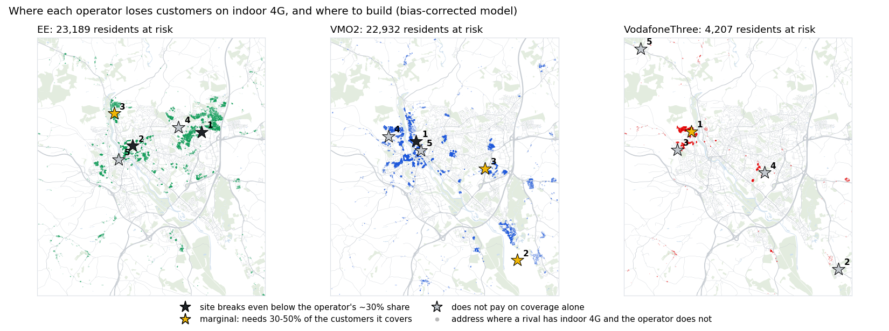

Where Exeter's indoor 4G gaps cost customers, and which ones are worth a mast
An independent read from open data: Ofcom drive tests, Environment Agency LiDAR and Census 2021, for 152,419 residents in Exeter and its edges.
Three operators, three different moves
VMO2
BuildMost exposed: 9,400 to 22,900 residents get indoor 4G from a rival but not from VMO2.
One site at the University or Central Exeter pays back in both scenarios, needing 9-18% of the customers it covers against a fair share of about 30%.
EE
Measure firstThe case turns on how optimistic the model is: its best sites need 60-186% of covered customers as modelled, 20-36% bias-corrected.
A one-day drive in three areas settles it before about £750k is committed.
VodafoneThree
Don't build, marketIts gaps are small and scattered; the best site needs 41-93% of covered customers.
2,000 to 5,200 residents get indoor 4G only from VodafoneThree. That is a marketing opportunity, not a network one.

Residents a rival covers indoors and you do not
| Operator | As modelled | Bias-corrected |
|---|---|---|
| EE | 5,935 | 23,189 |
| VMO2 | 9,429 | 22,932 |
| VodafoneThree | 1,964 | 4,207 |
| No operator | 795 | 2,374 |
Indoor 4G is Ofcom's -95 dBm. The gaps cluster on valley sides and in the dense centre, where hills and buildings block the existing masts.
Not every gap is worth the same: the University area is the prize
| Operator | Defend | Attack | Top area to defend |
|---|---|---|---|
| EE | 5,120 / 19,736 | 864 / 1,908 | University; Central |
| VMO2 | 8,419 / 19,900 | 72 / 335 | University; Central |
| VodafoneThree | 1,615 / 3,454 | 1,795 / 4,716 | Exwick & Foxhayes |
Heavy data users who pick a network every September. Weighted by value (employed or studying, relative to the area), the University tops VMO2's list in both scenarios.
Defend: adults a rival covers indoors and the operator does not, the customers it loses on coverage. Attack: adults only it covers, where marketing wins. As modelled / bias-corrected.
Share of covered customers each site must win or keep to pay back in five years
£250k all in (site, planning, power, backhaul, build), 10% a year to run, £13.24 ARPU (Ofcom, Q4 2025), 50% margin, five-year payback.
| Site cost | Subscribers |
|---|---|
| £250k | 944 |
| £500k | 1,888 |
| £750k | 2,832 |
VMO2's Central site still pays at £750k if the bias correction holds (26% of 10,729).
The model is right about where, and optimistic about how much
| Network | Indoor, measured | Indoor, modelled | Same class |
|---|---|---|---|
| EE | 87.6% | 98.4% | 87% |
| O2 | 80.7% | 89.4% | 80% |
| Vodafone | 85.5% | 84.0% | 81% |
| Three | 65.5% | 73.6% | 78% |
On drive-test areas the model never saw (one in five 1 km squares held out), it overstates indoor coverage by 8-11 points for EE, O2 and Three.
So every result comes twice
As modelled: gaps are lower bounds.
Bias-corrected: each network's signal lowered by its held-out mean error (EE 6.3 dB, O2 4.8, Three 4.8, Vodafone 3.9).
The two agree on where to build, usually within 500 m, and on the order of the operators. They differ on how much money is at stake.
Spread the drive over places, not readings: the model's error is local
| 1 km squares driven | Right call | 95% range of the measured error |
|---|---|---|
| 1 | 39% | ±21 dB |
| 3 | 50% | ±12 dB |
| 5 | 58% | ±10 dB |
| 8 | 63% | ±8 dB |
| 12 | 68% | ±6 dB |
75% of EE's error varies between 1 km squares; readings within a square mostly agree, so 100 readings per square tell little more than 10. And the optimism is uneven, so even 12 squares get a citywide bias right only about two times in three. Worst case of the two possible truths, 30 road squares per 1 km square.
Decision rule
Drive EE's three target areas (Pinhoe, the University, Central Exeter) with a scanner and compare each 20 m road square with the model.
Do not estimate a bias and apply it. Drive every 1 km square inside each candidate site's footprint, about 10 road squares in each, and count the customers there without indoor 4G. Build where that count clears the 944-subscriber break-even at a fair share.
After a site is built
Compare covered neighbourhoods with similar ones the site does not reach, before and after: indoor coverage share, port-outs and data traffic, over three months each side (difference in differences).
Open data gets the direction; partner data would get the numbers
- Real cell locations and antenna patterns: masts here are estimated from where the signal is strongest.
- Device-side measurements: they see indoors and every street, where drive tests see only roads.
- Local market share, churn and port-outs by postcode: replace the national 30% share and the break-even framing with actual switching.
- Capacity: busy cells need 1,800-2,600 MHz layers on existing masts rather than new sites; drive tests measure signal, not load.
How it was built
Python and DuckDB SQL on Ofcom's drive tests (2022-2024), 1 m LiDAR and Census 2021. Path loss with terrain diffraction, calibrated per operator and validated on held-out areas.
Coverage checker: petersolan.github.io/Mobile-Signal-Strength/coverage.html
Code and method: github.com/petersolan/Mobile-Signal-Strength